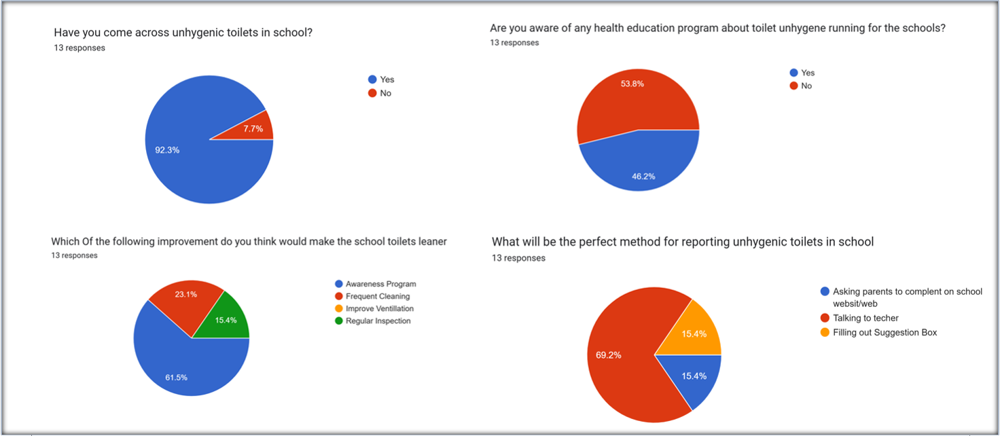
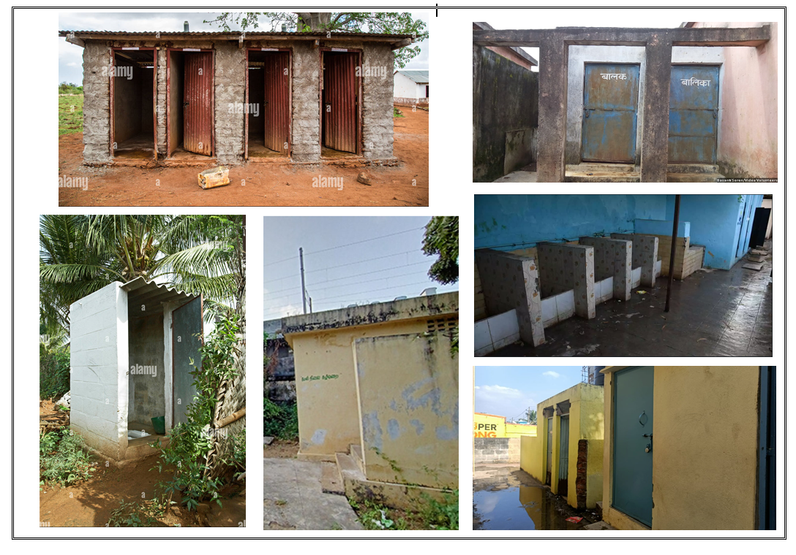

Trash to Treasure
"Health and Hygiene - Better than wealth and digene"
Recently our school carried one survey and recived following response

92.7% Parents Says Schools Have Unhygienic Toilets.
53.8% of parents are aware of the "Education Program on Toilet Hygiene," but it is not implemented in schools.
61.5% of parents believe that an awareness program would be beneficial for improving toilet hygiene in schools.
69.2%of parents believe that communicating with teachers is the best method for reporting unhygienic toilets in schools.
Information from Internet

22.8%of schools of rural areas have a unusable toilets despite progress in toilets in goverment Swachh Bharat Abhiyan
In Unilever has mentioned that the school toilets reports find.....
Health Risks: Many students avoid using school restrooms due to their unhygienic conditions, which can lead to increased urinary tract infections and other bladder-related health issues. Prolonged avoidance can also result in chronic constipation, which may cause long-term gastrointestinal problems.
Impact on Attendance: Poor sanitation facilities can contribute to school absenteeism. Students, especially girls, may miss school during their menstrual cycle due to a lack of clean and private toilet facilities, which can affect their overall academic performance and mental health.
Mental Health Effects: The anxiety and embarrassment associated with using dirty or insufficient toilets can lead to stress and negatively impact students’ learning experiences and self-esteem.
Gender Disparities: Girls are disproportionately affected by inadequate toilet facilities, particularly during menstruation. This not only affects their school attendance but can also lead to dropping out of school altogether, perpetuating gender inequality in education.
Need for Community Engagement: Sustainable solutions require community involvement in the maintenance and cleanliness of school toilets. Educating students and staff about hygiene practices can foster a sense of ownership and responsibility.
Investment in Infrastructure: There is a need for increased investment in the construction and maintenance of school sanitation facilities. Regular assessments and funding are essential to ensure that toilets remain functional and hygienic.
Essential Tips for Maintaining Toilet Hygiene:
Flush after every use.
Clean the toilet regularly with disinfectant.
Use hand soap to wash hands thoroughly after using the toilet.
Ensure there is adequate ventilation in the bathroom.
Keep a toilet brush nearby for immediate cleaning if needed.

Cleanliness Begins with You: Let's Keep Our Toilets Fresh and Hygienic for All!